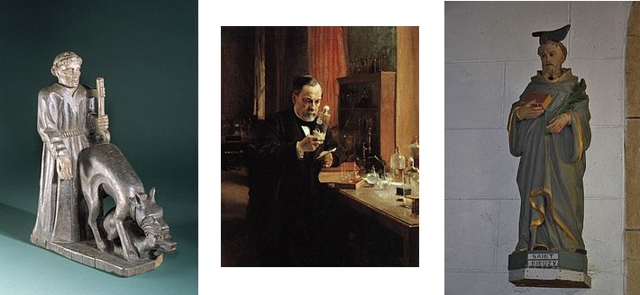

Ar pried-nevez arajet
Le marié enragé
The rabid groom
Chant collecté par Théodore Hersart de La Villemarquédans le 2ème Carnet de Keransquer (p.115).

"Le mari enragé" publié dans "La Paroisse Bretonne de Paris", juillet-août 1926 par l'Abbé François Cadic
Arrangement Christian Souchon (c) 2014
|
A propos de la mélodie Le premier vers de chaque distique est répété 3 fois dans la version vannetaise de ce chant notée l'Abbé Jean-François Cadoux et publiée par l'Abbé F. Cadic . Loeiz Herrieu ( "Guerzenneu ha sonnenneu Bro-Guened, 1911-1930") a noté une autre mélodie. Y-F. Kemener en donne 3 autres dans ses "Carnets de route", collectées à Priziac, Plouray (1978) et Silfiac (avant 1996). A propos du texte Plusieurs versions donnent le nom de la jeune femme: Anne Chaudour. La version vannetaise publiée par l'abbé François Cadic dans la "Paroisse Bretonne de Paris", juillet-août 1926, situe l'événement à Mûr-de-Bretagne (version collectée par l'Abbé Jean-François Cadoux, recteur de Croixanvec). Cette localisation est confirmée par le Chanoine Pérennés mentionne aussi un couplet dune version recueillie près de MM Parcheminou, St Nic, en 1939, dans "Annales de Bretagne". Classification Malrieu Référence : M-00133 Titre critique breton : Ar pried-nevez arajet Titre critique français : Le marié enragé qui tue son épouse Le site https://tob.kan.bzh/chant-00133.html dénombre 11 versions et 21 occurrences auxquelles il faut désormais ajouter la présente version qui s'avère la plus ancienne occurrence. Ce chant a été collecté sous des titres divers, Ar gounnar, Le marié enragé, Ar paotr eured arajet, Komañs a ra 'n iliz glebiañ, La rage, Drouk ar c'hi, Ar c'hi klañv, Iliz ar Meur, Iliz Ploermeur. Outre les noms déjà cités, les autres collecteurs sont J-M. de Penguern (avant 1856), Joseph Canteloube (Anthologie des chants populaires français, 1951) et F-M. Luzel ("Mélusine, T3, 1886-1887, collecté en novembre 1885 à Quimper). |
About the tune The first line of each couplet is repeated 3 times in the Vannes version of this song, noted by Abbé Jean-François Cadoux and published by Abbé F. Cadic. Loeiz Herrieu ("Guerzenneu ha sonnenneu Bro-Guened, 1911-1930") noted another tune. Y-F. Kemener gives 3 others in his "Carnets de route", collected in Priziac, Plouray (1978) and Silfiac (before 1996). About the lyrics Several versions give the name of the young woman: Anne Chaudour. The Vannes version published by Father François Cadic in the "Paroisse Bretonne de Paris", July-August 1926, situates the event in Mûr-de-Bretagne (a version collected by Father Jean-François Cadoux, vicar of Croixanvec) . This localization is confirmed by Canon Perennés also mentions a verse of a version collected near MM Parcheminou, at St Nic, in 1939, in "Annales de Bretagne". Malrieu classification Reference: M-00133 Breton critical title: Ar pried-nevez arajet English critical title: The furious groom who kills his wife. The https://tob.kan.bzh/chant-00133.html site lists 11 versions and 21 occurrences to which we must now add the present version, which turns out to be the oldest. This song was collected under various titles, Ar gounnar, Le marié enragé, Ar paotr eured arajet, Komañs a ra 'n iliz glebiañ, La rage, Drouk ar c'hi, Ar c'hi klañv, Iliz ar Meur, Iliz Ploermeur. In addition to the names already mentioned, other collectors of this piece are J-M. de Penguern (before 1856), Joseph Canteloube (Anthology of French popular songs, 1951) and F-M. Luzel ("Mélusine, T3, 1886-1887", collected in November 1885 in Quimper). |
|
BREZHONEG (Stumm KLT) Ar beleg (L'enragé) Page 115 / 61 1. [Ur zonig nevez zo savet] Da zaou zen yaouank eo graet 2. 'Tre o dim(ez)i hag o eured Dont er ger dimeus ur banked. 3. Gant ur chi klañv oant dispartiet Ur chi klañv hen en-doa kroget 4. - Ar plachik paour-mañ a ouele Ne gave den he c'honforte, Nemet he breur beleg a re. P. 116 5. Hennezh a lare dezhi bepret: - Tavit ma choar, na ouelit ket Un den a feson hoch-eus bet. 6. Un tieg mat, den a feson. N'eus ket evel de(zh)añ er chanton. 7.- Penaos ouizfe bout den a feson Hag eñ kounnaret e galon? 8. E zaoulagad 'n e benn zo o teviñ 'Vel ur podad dour o virviñ 9. Ma breur beleg, mar am charit Chwi teuy gant ur goulou e-berr dam gwele! - 10. He breur beleg a lavare Da dud ar banvez an deiz-se: 11. - Na tapit din ar goulou-se Ma ean da wel't ma choar aet d'he gwele Rak me glev ane(zh)i o ouelañ. - 12. E-barzh an ti pa antreas Un torfed bras eñ a welas, 13. A welas e choar war 'l leur-zi Tennet he chalon anezhi. 117 / 62 14. E-barzh an ti, pa antreas, En ur fuzuilh garg(et) a grogas. 15. - Ma breur beleg, mar am charit, [1] Gant flemmoù tan nam lahzit ket, 16. Na ma mougit kreiz-tre div cholched, [2] Pe loskit ma gwad da redek. (3] 17. - Da betra oas eureudet dam choar Ma oas paket gant ar gounnar? 18. - Ma breur beleg, am zigarit, 'Tre ma dim(ezh)i ha ma euret ; [4] 19. O tont er-ger d'eus ar banked Ur chi klañv, eñ en-doa kroget. [5] 20. Setu 'maint hont o-daou 'n un toullad Pa 'n int ket aet 'n ur gwelead. [6] KLT gant Christian Souchon (c) 2020 |
FRANCAIS Le prêtre (L'enragé) Page 115 / 61 1. [C'est un bien triste épithalame] Que je m'apprête à vous chanter. 2. Quelques jours avant son mariage Un gars revenait d'un banquet. 3. Quand un chien atteint de la rage Mordit le pauvre fiancé. 4. - Et sa promise était en larmes. Nul ne soulageait ses alarmes, Hormis son frère, le curé. P. 116 5. Lequel disait avec douceur: - Ne pleurez point, ma chère soeur! C'est un beau parti que cet homme. 6. Bien éduqué, fort économe. De tous ici c'est le meilleur. 7.- Eduqué, comment peut-on l'être, Lorsque l'on a la rage au coeur? 8. L'éclair dans ses yeux me pénètre Comme une bouillante liqueur. 9. Je vous supplie, mon frêre prêtre, De venir éclairer mon lit.- 10. L'ecclésiastique au soir des noces Aux hôtes du banquet a dit: 11. - Apportez-moi cette chandelle! Je me rends chez ma soeur. C'est elle Qu'en sa chambre on entend pleurer. - 12. Or, dans la maison quand il entre, L'attend un spectacle d'horreur 13. Celle qui gît là sur le ventre, Le coeur arraché, c'est sa soeur. 117 / 62 14. Dans la maison, à peine entré, Il saisit un fusil chargé. 15. - Beau-frère, tuez-moi, je le veux, Mais pas avec une arme à feu! 16. Qu'on m'étouffe entre deux couettes, Ou bien que l'on me saigne à mort!. 17. - Epouser ma soeur, quand vous êtes Atteint de rage! Mais encor? 18. - Entre fiançailles et noces, Beau-frère, un soir il s'est produit, 19. Retour d'un banquet, qu'un molosse Enragé soudain me mordit. - 20. Ils dorment dans la même fosse, S'ils n'eurent point le même lit. Traduction Christian Souchon (c) 2020 |
ENGLISH The Priest (The Rabid Bridegroom) Page 115/61 1. [This new song is about]] A newly-wed couple. 2. A few days before the wedding The groom on his way back from a banquet. 3. By a dog that had rabies Was bitten, poor lad! 4. - And the bride was in tears. No one calmed the young woman, Except her brother the priest P. 116 5. Who said in a soft voice: - Don't cry, my dear sister! You could not make a better match. 6. Well educated, very thrifty. Of all here he is the best. 7.- What's the use of being educated, When you're contaminated with rabies? 8. His piercing look penetrates me It burns like a boiling cauldron. 9. I beg you, my brother priest, To come and light up to my bed. 10. The clergyman on the wedding night Said to the banquet party: 11. - May I have that candle? I'm going to my sister's house. I heard her crying in her room. - 12. When he entered the house, He found a horrid crime scene: 13. His sister lying on the floor With her heart torn out of her chest. 117/62 14. On entering the house, He grabbed a loaded rifle. 15. - Brother-in-law, kill me, please do! But not with a gun! 16. Let me be smothered between two eiderdowns, Or let me bleed to death!. 17. - Why did you marry my sister If you knew that you were affected with rabies? 18. - Brother-in-law, it happened one evening, In the time between engagement and wedding, 19. On my way back from a banquet, That a rabid dog bit me. - 20. The both were to sleep in the same grave, But never had in the same bed. |
NOTES
|
[1] Dans la version Cadic, tout au moins dans la traduction française du texte vannetais, c'est la jeune femme qui demande à sonfrère de l'achever selon ces méthodes barbares. C'est sans doute une erreur. Le mot "breur" ne peut ici signifier que "beau-frère". [2] Ce n'est qu'en 1885 que Pasteur annonce la réussite de la première vaccination humaine, celle de Joseph Meister (1876-1940) mordu par un chien enragé le 4 juillet 1885, et vacciné le 6. La pratique le l'étouffement du malade est ancienne: Dans une lettre de rémission de 1446, on trouve un cas de rage humaine survenu à Wissous, où le patient fut étouffé par sa famille afin d'abréger ses souffrances. (Source: Wikipédia) (3] La saignée évoquée ici visait peut-être à l'origine à tenter de guérir le malade. L'Italien Girolamo Fracastoro (1478-1553) avait une vision assez claire du processus de contagion (contagium vivum): transmission par des êtres vivants minuscules qu'il appelle seminaria. La rage n'est pas une putréfaction mais une contagion par des semina se trouvant dans la salive du chien enragé. Selon lui, la maladie se manifeste quand la région du cur est atteinte, et il préconise de faire saigner et cautériser immédiatement la plaie. (Source: Wikipédia). [4] Chez Cadic il est dit que quatorze lunaisons se sont écoulées depuis que le malheureux a été mordu ("Paset é er pearzek loérad pe oen dantet"), si bien qu'il pouvait se croire immunisé. [5] La version Cadic décrit ainsi l'incident:
[6] Alors que l'article Wikipédia ne le mentionne pas parmi les saints intercesseurs contre la rage invoqués en France (comme saint Hubert) ou en Bretagne (comme saint Gildas ou saint Tugen), l'abbé François Cadic consacre un long développement à saint Bieuzy, un compagnon de Gildas qu'il avait suivi de Grande-Bretagne jusqu'au Castannec sur le Blavet. La rage portait aussi le nom de mal saint Bieuzy, et le bienheureux était invoqué pour la conjurer ; je trouve cette conjuration dans un recueil de proverbes du Haut-Vannetais : Ki klan, troeit a me hent, - Doué ha me hieu en hent. - Sant Bihui e oé gañnet - Kant ma oeh hui, ki klan arrajet. « Chien enragé, tourne-toi de mon chemin ; ce chemin est à Dieu et à moi. Saint Bieuzy était né bien avant toi, chien fol enragé » Selon l'hagiographe Guy Autret de Missirien, saint Bieuzy est l'auteur d'un curieux miracle. Vers 570, un valet lui demande d'interrompre sa messe pour aller guérir la meute des chiens de son seigneur atteinte de rage mais Bieuzy refuse. Le seigneur breton furieux vient lui fendre le crâne avec un glaive (une hache, couteau ou coutelas selon les versions de la légende), le coup étant si violent que loutil y reste planté. Bieuzy aurait trouvé la force de parcourir à pied 80 kilomètres pour se rendre à labbaye de Rhuys où il meurt sous la bénédiction de son maître saint Gildas. Une chapelle de Saint-Bieuzy en Pluvigner marque le lieu où, dans son voyage, le bienheureux s'arrêta pour y passer la nuit ; auprès, se trouve une fontaine dont l'eau guérit et préserve de la rage ; il suffit de boire de cette eau ou de manger du pain qu'on y a trempé. Les personnes baptisées dans la chapelle n'ont rien à craindre des morsures des chiens enragés. (Sources: http://www.infobretagne.com/saint-guerisseur-bieuzy.html et Wikipédia- article "Bieuzy"). |
[1] In the Cadic version, at least in the French translation of the Vannes dialect text, it is the young woman who asks her brother to kill him by dint of these barbaric methods. It is probably a mistake. The word "breur" here can only mean "brother-in-law". [2] It was not until 1885 that Pasteur announced the success of the first human vaccination, that of Joseph Meister (1876-1940) bitten by a rabid dog on July 4, 1885, and vaccinated on July 6. The practice of smothering the patient is old: In a letter of remission from 1446, we find a case of human rage occurred in Wissous, where the patient was smothered by his family in order to shorten his suffering. (Source: Wikipedia). (3] The bleeding mentioned here was originally intended to try to cure the patient. The Italian Girolamo Fracastoro (1478-1553) had a fairly clear vision of the contagion process (contagium vivum): transmission by tiny living things he calls "seminaria". Rabies is not putrefaction but contagion by semina found in the saliva of the rabid dog. According to him, the disease manifests itself when the region of the heart is reached, and he recommends to bleed and immediately cauterize the wound (Source: Wikipedia). [4] In the Cadic version it is said that fourteen lunations had passed since the unfortunate man was bitten ("Paset é er pearzek loérad pe oen dantet"), so that he could believe he was immune. [5] The Cadic version describes the incident as follows:
[6] While the Wikipedia article does not mention it among the holy intercessors against rabies invoked in France (like Saint Hubert) or in Brittany (like Saint Gildas or Saint Tugen), Father François Cadic devotes a long development to Saint Bieuzy, a companion of Gildas whom he had followed from Great Britain to Castannec on the Blavet. Rabies also bore the name of "Saint Bieuzy's evil", and the blessed man was invoked to ward off it; we find the following magic saying in a collection of Haut-Vannetais proverbs: Ki klan, troeit a me hent, - Doué ha me hieu en hent. - Sant Bihui e oé gañnet - Kant ma oeh hui, ki klan arrajet. Rabid dog, turn from my path; this path is open to God and to me. Saint Bieuzy was born long before you were, mad rabid dog !» According to hagiographer Guy Autret de Missirien, Saint Bieuzy is credited with a curious miracle. Around 570, a manservant asked him to interrupt his mass to go and cure the pack of dogs of his lord suffering from rage but Bieuzy refused. The furious Breton lord came and split his skull with a sword (an ax, knife or cutlass according to the different versions of the legend), the blow being so violent that the tool remained planted there. Bieuzy is said to have found the strength to walk 80 kilometers to get to Rhuys Abbey where he died, provided with the blessing of his master Saint Gildas. A chapel of Saint-Bieuzy near Pluvigner marks the place where, on his journey, the blessed man stopped to spend the night there; nearby is a fountain whose water heals and preserves from rabies; to be cured you just have to drink this water or to eat bread that has been soaked in it. The people baptized in the chapel have nothing to fear from the bites of rabid dogs. (Sources: http://www.infobretagne.com/saint-guerisseur-bieuzy.html and Wikipedia- article "Bieuzy"). |

Saint Tugen - Louis Pasteur - Saint Bieuzy